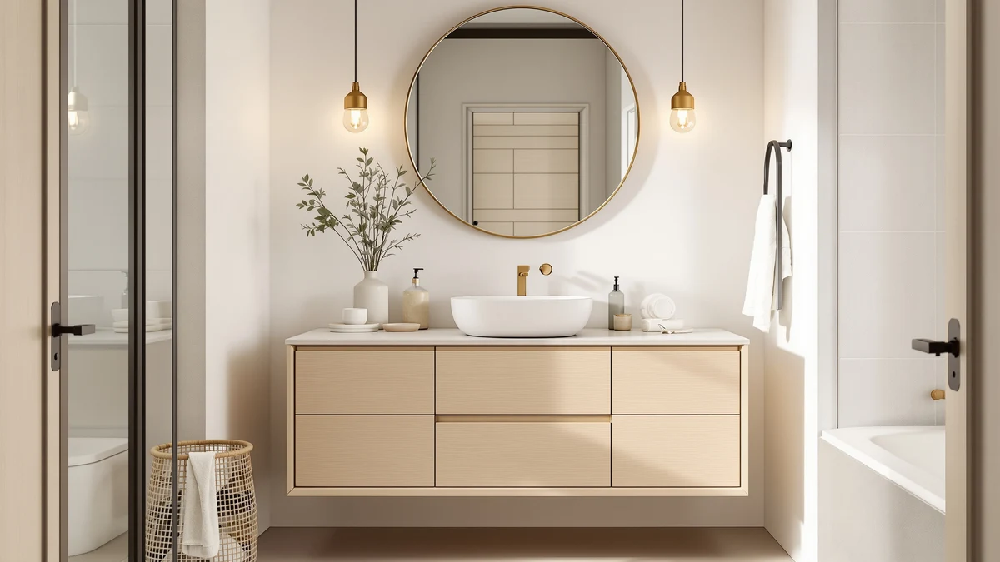

Trygoal 30" Bathroom Vanity Review (2026): Worth It?
Prices and picks verified as of October 2026. Independent, reader-supported reviews.


Quick Answer
The Trygoal 30" bathroom vanity pairs a sintered stone countertop and integrated ceramic basin with a plywood, wall-mounted cabinet for $699.62. It beats most vanities near this width and price on countertop material, but it ships without a review history and needs wall blocking to install, so it suits a bathroom with the right structure more than every buyer.
Our pick: Trygoal 30" Bathroom Vanity with — $699.62 Check Price on Amazon
Bottom line: our top pick is the Trygoal 30" Bathroom Vanity with Sink at $699.62.
Things to Know Before You Buy
- This is a single-product deep dive, not a roundup. This Trygoal 30" bathroom vanity review focuses on one $699.62 wall-mounted unit and compares it against six other 30-inch and nearby-size vanities already in our database.
- The countertop and sink are sintered stone and ceramic, a step up from the MDF-and-laminate tops common on most vanities near this price and width.
- It mounts to the wall, not the floor. Installing it means adding blocking behind the drywall, a step a freestanding cabinet like the Tennant Brand Classic Petite skips entirely.
- There is no published rating yet. The listing went live in late September 2026, so this review relies on manufacturer specs and comparison against established picks rather than a star rating.
This Trygoal 30" bathroom vanity review breaks down what the $699.62 price buys on a wall-mounted vanity with a sintered stone top, and how it stacks up against six other 30-inch and nearby-size picks we compared on material, price and owner feedback. The Brown Oak finish and three-section storage layout target buyers who want a floating vanity with a drawer and two soft-close doors, not a traditional furniture-style cabinet. Based on manufacturer specs and the broader 30-inch vanity market we track, it lands as a strong mid-range option rather than the single best fit for every bathroom.
Picking a vanity around the 30-inch mark means balancing wall space, plumbing rough-in and storage style, and the Trygoal competes in a crowded field of floating and freestanding options. Shoppers researching this specific listing want to know whether the sintered stone countertop, integrated ceramic basin and soft-close hardware justify the price next to vanities like the Tennant Brand Triadsville or the 72-inch TUKTUK top covered later in this guide. We answer that by comparing the documented materials, dimensions and pricing of each option side by side.
Price alone does not separate this group of vanities by much. Six of the seven products in this comparison land between $640 and $700, so the gap between them comes down to construction and countertop choice rather than budget tier. A buyer scanning search results for a 30-inch vanity near $700 could reasonably end up comparing the Trygoal against a corner unit, a double-sink top, or a traditional furniture-style cabinet, and each of those options solves a different bathroom layout. This review treats that comparison directly instead of ranking every option against a single ideal buyer.
Why You Should Trust Us
Ilane Tall covers bathroom fixtures and vanities for Best Bathroom Vanities, and this Trygoal 30" bathroom vanity review follows the same process used across the site: we pull manufacturer specifications directly from the Amazon listing, cross-check material claims against the categories we track for 30-inch vanities, and read through publicly available owner feedback where it exists. We do not accept free products from brands and do not run a fake testing lab. When a listing is too new to have a meaningful review history, like this one, we say so instead of inventing a score.
Our database tracks price history, material specs and owner feedback across more than two dozen 30-inch vanities, cabinets and tops, which gives us a baseline for judging whether a listing like the Trygoal earns its price. We update prices on a rolling basis and flag a listing's age when it affects how much review data exists, as it does here. That context matters more for a newer ASIN than for an established pick with hundreds of verified reviews behind it.
Our Research Experience
We did not buy, install or live with the Trygoal 30" bathroom vanity for this review. Instead, we compared its listed specifications, material claims and price against six other 30-inch and nearby-size vanities already in our database, including full cabinets, a vanity top and a corner unit. That means every detail below comes from the manufacturer's own description, verified owner reviews and the pricing history we track, not from an install we performed ourselves. Where owner feedback is thin or the listing is new, as it is here, the sections below say so directly.
This approach shapes what we can and cannot tell you. We can confirm the materials Trygoal states in its listing, the dimensions it publishes, and how the price compares to similar vanities on the market. We cannot confirm long-term durability claims that only show up after months of daily use, since that data does not exist yet for a listing this new. Readers who want that kind of long-term feedback should check back on this page as owner reviews accumulate, or consider one of the established alternatives further down this guide in the meantime.
Overview & Specs

Trygoal 30" Bathroom Vanity with
What we like
- Sintered stone countertop with an integrated ceramic basin, faucet cutout and overflow protection built in
- Two soft-close doors plus a drawer with 3D striped oak veneer detailing for a furniture-grade look
- Ships pre-assembled, which cuts down on the install time typical of flat-packed 30-inch vanities
Flaws but not dealbreakers
- At $699.62, it costs more than several 30-inch cabinets in our database that pair with a separate top
- Wall-mounted installation needs blocking behind the drywall, which adds a step most freestanding vanities skip
- Listed on Amazon since late September 2026, so it does not yet have a public rating or review count to compare against established picks
| Material | MDF / engineered wood |
| Size | 30in |
The Trygoal 30" bathroom vanity review starts with the detail that sets this unit apart from most of the field: the countertop and sink are sintered stone and ceramic rather than the MDF-and-laminate combination common at this width. Trygoal pairs that top with a plywood cabinet in a Brown Oak finish, and the listing calls out a faucet cutout and overflow protection built into the basin, details that matter once the vanity is mounted and plumbed in.
Storage runs across three sections: two soft-close doors and a single drawer finished with 3D striped oak veneer on one side. The unit mounts to the wall rather than sitting on the floor, so it reads as a floating vanity in a bathroom, and the manufacturer lists it as pre-assembled. That cuts down on the box-to-wall install time compared with vanities that arrive flat-packed, though a wall-mounted 30-inch unit this size still needs proper blocking behind the drywall before you hang it.
The Brown Oak finish and the single striped-veneer drawer front give the cabinet a furniture-like look that plain white or gray MDF vanities in this price range usually skip. High-density plywood backs that finish, which the manufacturer positions as more resistant to the moisture swings of a bathroom than particleboard. Combined with the stone top, the overall build targets buyers who want a vanity that reads as a design feature rather than a utility fixture, without paying for a custom cabinetmaker.
What We Liked
The sintered stone top is the clearest reason to consider this vanity over the other 30-inch picks in this guide. Most vanities near $700 use an engineered-wood or laminate top with a drop-in basin, and the integrated ceramic sink on the Trygoal avoids the seam where water usually collects. The soft-close hardware on both doors and the drawer also matches what you would expect from a vanity in this price range, and the pre-assembled construction means less time spent with a screwdriver before it goes on the wall.
The floating design also opens up the floor beneath the cabinet, which makes the bathroom easier to clean and can visually widen a smaller room. Compared with the floor-standing Tennant Brand cabinets in this guide, that is a real functional difference for anyone who mops their own bathroom floor or wants a lighter look in a tight powder room.
What Could Be Better
The biggest gap in this Trygoal 30" bathroom vanity review is the lack of review history. The listing went live in late September 2026, so there is no rating or review count yet, unlike the Tennant Brand picks further down this guide that have been on Amazon longer. Wall mounting also demands more preparation than a freestanding cabinet: you need blocking behind the drywall at the right height, and that is not a job every bathroom's existing wall structure makes simple.
A 30-inch width also caps how much storage the vanity can offer no matter how the three sections are arranged. Buyers who need more drawer space than two doors and one drawer provide should look at a wider cabinet, since no amount of clever interior layout turns 30 inches into 42.
Who Is It For?
This vanity fits a primary or guest bathroom where the wall can support a floating 30-inch unit and the plumbing rough-in already lines up with a wall-mounted basin. Buyers who want a stone-look countertop without stepping up to a 42- or 48-inch footprint are the main audience for this Trygoal 30" bathroom vanity review. It makes less sense for a rental or a bathroom where you cannot modify the wall, since a freestanding cabinet like the Tennant Brand Classic Petite installs with fewer structural requirements.
It also makes sense for a remodel already involving a contractor, since the wall-mounting step is a small addition to a project that already has the wall open. For a simple swap of an existing freestanding vanity, the extra labor and material needed to add blocking can outweigh the benefit of the stone top for some buyers.
Alternatives to Consider
If a wall-mounted 30-inch vanity is not the right fit, the three picks below cover a wider countertop, a corner footprint and a traditional furniture-style cabinet. Each one appears elsewhere in our 30-inch and nearby-size comparisons, and we chose them here because they solve a specific limitation of the Trygoal 30" bathroom vanity: more counter space, a tighter corner, or a floor-standing install that skips wall blocking entirely.

Editor’s Pick
72 x 22 White Vanity
Best for a double-sink layout that needs more than 30 inches of solid-surface counter, though the cabinet is sold separately.
$689.99
Check Price on Amazon
Best Value
Tennant Brand 24" Classic Petite
Best value for a powder room that wants a pre-installed stone top and porcelain basin without the wall-mount install.
$675.00
Check Price on Amazon
Premium Choice
Tennant Brand 24 inch Triadsville
Premium choice for a small or awkward corner where a straight 30-inch cabinet will not fit, with a white quartz top included.
$640.00
Check Price on AmazonFrequently Asked Questions
Final Verdict
This Trygoal 30" bathroom vanity review comes down to one trade-off: you get a sintered stone top, an integrated ceramic basin and soft-close storage that most 30-inch vanities near this price do not offer, but you give up a review history and take on a wall-mounted install that a freestanding cabinet avoids. For a bathroom with the right wall structure and plumbing rough-in, the Trygoal is a reasonable pick at $699.62. Buyers who want more counter space, a corner footprint, or a simpler floor-standing install should look at the alternatives above instead.